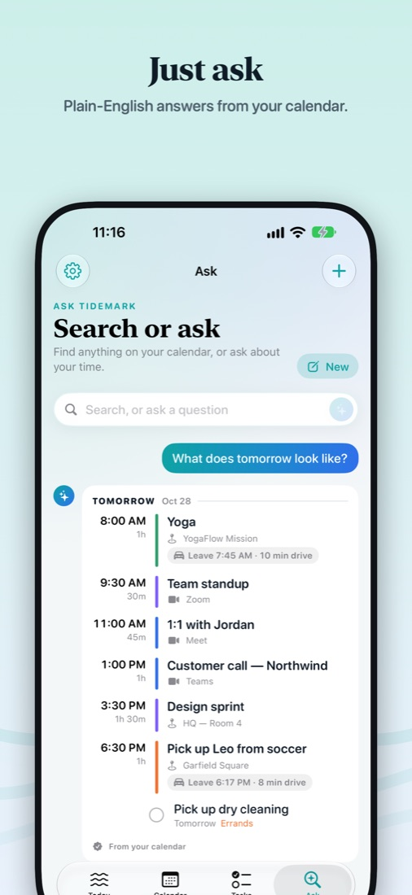

A private AI calendar: ask your calendar anything
“Am I free at 3 tomorrow?” “When's my next 1:1?” “Should I bring a jacket?” Tidemark answers from your own calendar — on your device.
What you can ask
When am I free for an hour this week? Free for lunch Friday? Time for a coffee before my next meeting?
What does tomorrow look like? What's after standup? How busy is next week?
Where do I need to be today? When should I leave for the dentist?
Do I need an umbrella tomorrow? Is it going to be cold tonight?
Why the answers are right
Most “AI calendars” send your schedule to a server and let a model write the answer, which is where made-up events come from. Tidemark answers everyday questions exactly from your calendar data, laid out like your day. With Apple Intelligence, the on-device model also reads typos and loose wording (“how bisy am i thursday”) and points them at your real events — but it never writes the answer itself.

No account, no tracking. Your calendar stays on your Apple devices; the App Store privacy label is “Data Not Collected”.
Get Tidemark free on the App Store
iPhone, iPad, Mac and Apple Watch · Free, with optional Tidemark Pro (7-day free trial)